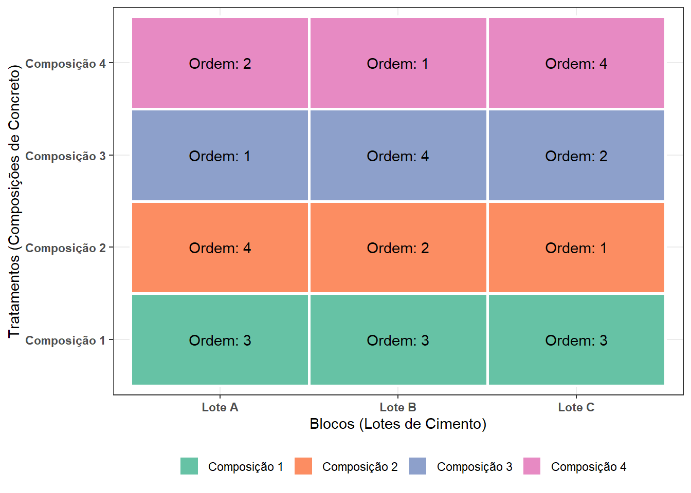
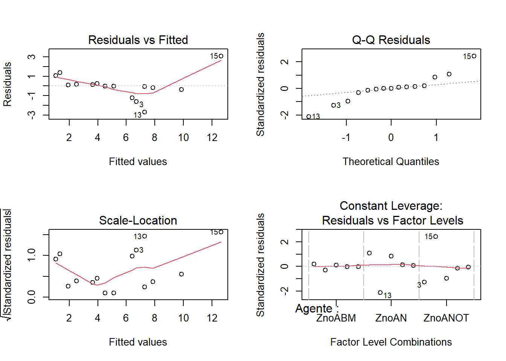
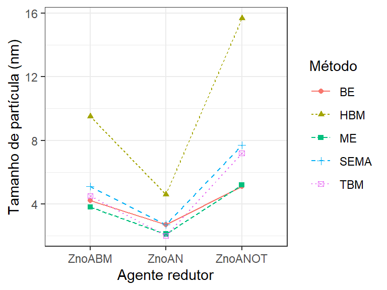
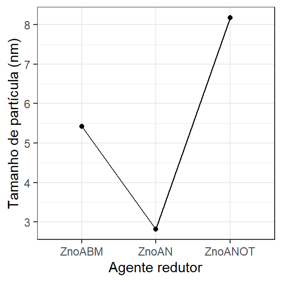

4 Planejamento com blocos completos aleatorizados
4.1 Introdução
Em diversos processos industriais e experimentais a presença de variáveis de fontes diversas às quais são inevitáveis, porém não interessam diretamente ao processo ou estudo, pode afetar o desempenho do processo e/ou as características de qualidade ou respostas medidas. Tais variáveis são comumente ditas de ruído e podem estar relacionadas a fatores ambientais, máquina, matéria-prima, entre outras. A aleatorização, conforme já explicado é uma premissa do planejamento de experimentos que auxilia na diluição da variabilidade adivinda de tais fatores em todas as corridas experimentais. Porém, em situações onde existem variáveis de ruído que são conhecidas e podem ser controladas, a blocagem é a técnica mais adequada para retirar do erro experimental a variância devido a tais variáveis.
O planejamento totalmente aleatorizado com blocos completos aleatorizados pode ser usado em casos onde deseja-se estudar um fator com a possibilidade de alocar cada replicação em cada nível da variável blocada.
Neste capítulo é utilizado o pacote ggpplot2, além das funções básicas do R. Recomenda-se a instalação destes utilizando o comando install.packages("<nome_pacote>"). Sempre que aparecer nos blocos de código R propostos o comando library(<nome_pacote>) para carregar um determinado pacote, antes este deve ser instalado.
4.2 Formas de tratar variáveis de ruído e blocagem
Existem diversas formas de tratar variáveis ou fatores de ruído. O tratamento a ser aplicado depende do nosso conhecimento sobre a variável e da nossa capacidade de controlá-la e/ou medí-la. Em muitas situações é possível eliminar a variável de ruído. Por exemplo em um ambiente fabril ou laboratorial onde a temperatura ambiente influencia na variabilidade do processo e, consequentemente, do produto, caso seja possível controlar a temperatura, de forma que esta permaneça constante durante o horizonte de tempo de produção ou experimentação, este ruído terá seu efeito minimizado ou eliminado. Em muitos casos, entretanto, não é factível a eliminação do efeito da variável de ruído. A Tabela 4.1 resume alguns tratamentos possíveis às variáveis de ruído. Quando a variável de ruído é desconhecida a aleatorização é a única forma de garantir que seu erro não se confunda ou não enviese o efeito de interesse no estudo. Quando a variável de ruído é conhecida, porém não mensurável ou não controlável, a análise de covariância (ANCOVA) pode ser empregada. Por fim, caso a variável de ruído seja conhecida e pode ser controlada, a blocagem é a técnica adequada para remover sua variabilidade do erro aleatório.
| Variável de ruído | Desconhecida | Conhecida |
|---|---|---|
| Não mensurável | Aleatorização | ANCOVA |
| Controlada | - | Blocagem |
Existem diveros exemplos de variáveis de ruído presentes em processos industriais e experimentais que podem ser blocadas. Por exemplo, considere o caso onde deseja-se testar o efeito de distintas composições de concreto para aplicação estrutural e não há cimento (ou outra matária-prima) suficiente de um mesmo lote para fazer todas replicações das composições (ou tratamentos) de interesse. O ideal neste caso seria realizar uma replicação com todas as composições fabricadas de forma aleatória com cimento de um lote A, outra replicação com todas as composições fabricadas de forma aleatória com cimento de um lote B e assim sucessivamente. A intenção neste caso seria se precaver de uma possível variabilidade adivinda da diferença entre lotes de cimento. Pode ser que o fabricante garanta o atendimento das especificações do produto e, portanto, mínima variabilidade entre lotes, porém até mesmo o tempo de armazenamento, pode ser fonte de variabilidade neste tipo de produto. O ideal seria usar para todo o rpocedimento o mesmo lote, mas se não é possível a técnica de blocagem será útil para retirar do erro experimental a variabilidade da matéria-prima. A Figura 4.1 ilustra tal delineamento considerando 4 composições de concreto (tratamentos), 3 lotes de matéria-prima e, portanto, 3 réplicas. Os 4 tratamentos devem ser conduzidos de forma aleatória dentro dos blocos.
Outros exemplos de variáveis passívas de blocagem incluem cultivares (área de cultivo), operador/medidor, máquina/equipamento, turno, entre outras. Em alguns casos a blocagem é necessária por indisponibilidade de recursos de uma mesma fonte, em outros para minimizar o tempo de execução dos experimentos, seja em ambiente científico ou industrial.
Exemplo 4.1 (Determinação do tamanho de nanopartículas de óxido de zinco com distintos métodos de medição) Um estudo investiga vários métodos teóricos e experimentais para determinar o tamanho de nanopartículas de óxido de zinco (ZnO NPs) e analisa suas características usando espectroscopia UV-Vis. A pesquisa começa com a síntese verde de três amostras de ZnO NPs, utilizando três agentes redutores diferentes: biomassa do fungo Aspergillus niger (AN), folhas de Aloe barbadensis Mill (ABM) e folhas de Ocimum tenuiflorum (OT), com sulfato de zinco como precursor, através do método de precipitação. São aplicados diferentes métodos de medição tamanho das nanopartículas: Aproximação de Massa Efetiva (EMA), Equação de Brus (BE), Modelo de Banda Hiperbólica (HBM), Expressão de Meulenkamp (ME), Modelo de Ligação Forte (TBM) e uma versão simplificada da EMA (SEMA). Os resultados são apresentados na Tabela 4.2, com código para obtê-lo explicitado a seguir.
ZnoAN<- c(2.7,2.7,2.1,2.0,4.6)
ZnoABM<- c(4.2,5.1,3.8,4.5,9.5)
ZnoANOT<- c(5.1,7.7,5.2,7.2,15.7)
a <- 3 #número de tratamentos (níveis)
b <- length(ZnoAN) #número de blocos
N <- a*b #número de experimentos
set.seed(123)
Ordem <- unlist(replicate(5, sample(1:3, size = a, replace = FALSE), simplify = FALSE))
metodo <- as.factor(rep(c("BE", "SEMA", "ME", "TBM", "HBM"), each = 3))
ReducingAgents <- rep(c("ZnoAN","ZnoABM","ZnoANOT"), 5)
Agente <- as.factor(ReducingAgents)
Particle_size <- matrix(c(ZnoAN,ZnoABM,ZnoANOT),
nrow=3, ncol= 5, byrow=T) # resposta
colnames(Particle_size) <- c("BE", "SEMA", "ME", "TBM", "HBM")
rownames(Particle_size) <- c("ZnoAN", "ZnoABM", "ZnoANOT")
Bloco <- metodo
Tamanho <- c(Particle_size)
planejamento <- data.frame(Ordem,Agente,Bloco,Tamanho)Seja o conjunto geral de dados resumido na Tabela 4.3. Neste conjunto tem-se \(a\) tratamentos de interesse e \(b\) blocos. De forma geral, cada observação pode ser denotada como \(y_{ij}\), com \(i = 1, ..., a\) e \(j = 1, ..., b\).
| Tratamentos | Bloco 1 | Bloco 2 | … | Bloco b | Somas | Médias |
|---|---|---|---|---|---|---|
| 1 | \(y_{11}\) | \(y_{12}\) | … | \(y_{1b}\) | \(y_{1.} = \sum_{j=1}^{b}{y_{1j}}\) | \(\bar{y}_{1.} = y_{1.}/b\) |
| 2 | \(y_{21}\) | \(y_{22}\) | … | \(y_{2b}\) | \(y_{2.} = \sum_{j=1}^{b}{y_{2j}}\) | \(\bar{y}_{2.} = y_{2.}/b\) |
| \(\vdots\) | \(\vdots\) | \(\vdots\) | \(\ddots\) | \(\vdots\) | \(\vdots\) | \(\vdots\) |
| a | \(y_{a1}\) | \(y_{a2}\) | … | \(y_{ab}\) | \(y_{a.} = \sum_{j=1}^{b}{y_{aj}}\) | \(\bar{y}_{a.} = y_{a.}/b\) |
| Somas | \(y_{.1} = \sum_{i=1}^{a}{y_{i1}}\) | \(y_{.2} = \sum_{i=1}^{a}{y_{i2}}\) | … | \(y_{.b} = \sum_{i=1}^{a}{y_{ib}}\) | \(y_{..} = \sum_{i=1}^{a}\sum_{j=1}^{b}{y_{ij}}\) | |
| Médias | \(\bar{y}_{.1} = y_{.1}/a\) | \(\bar{y}_{.2} = y_{.2}/a\) | … | \(\bar{y}_{.b} = y_{.b}/a\) | \(\bar{y}_{..} = y_{..}/(a \times b)\) |
Para um delineamento em blocos completos ao acaso o modelo de efeitos para uma observação \(y_{ij}\) é exposto na Equação 4.1.
\[ y_{ij} = \mu + \tau_i + \beta_j + \varepsilon_{ij} \tag{4.1}\]
Onde:
- \(y_{ij}\) é a observação da variável resposta referente ao tratamento \(i\) no bloco \(j\);
- \(\mu\) é a média geral (constante comum a todas as observações);
- \(\tau_i\) é o efeito do tratamento \(i\), isto é: \(\tau_i = \bar{y}_{i.} - \bar{y}_{..}\);
- \(\beta_j\) é o efeito do bloco \(j\), isto é: \(\beta_j = \bar{y}_{.j} - \bar{y}_{..}\);
- \(\varepsilon_{ij}\) é o erro experimental associado à observação \(y_{ij}\), assumido como independente e normalmente distribuído com média zero e variância constante \(\sigma^2\);
Adicionalmente, assume-se que: \(\varepsilon_{ij} \sim N(0, \sigma^2)\), \(\sum_{i=1}^{a} \tau_i = 0\) e \(\sum_{j=1}^{b} \beta_j = 0\).
As hipóteses testadas na análise de variância no delineamento em blocos casualizados consideram os efeitos dos tratamentos e dos blocos. A hipótese nula para os tratamentos é a de que todos os efeitos são nulos, enquanto a hipótese alternativa sugere que ao menos um dos efeitos é diferente. Analogamente, assume-se que os blocos têm efeito aleatório e controlam a variabilidade do experimento. As hipóteses para os tratamentos são formuladas da seguinte forma:
\[ H_0: \alpha_1= \alpha_2 = \cdots = \alpha_a = 0 \] \[ H_1: \alpha_i \ne 0, \text{ para ao menos um } i \]
A análise de variância em é baseada no particionamento da soma dos quadrados total em três componentes: soma dos quadrados entre tratamentos (\(SS_{Trat}\)), entre blocos (\(SS_{Bloco}\)) e dentro dos tratamentos e blocos (erro) (\(SS_{Erro}\)), conforme a Equação 4.2.
\[ \underbrace{\sum_{i=1}^{a} \sum_{j=1}^{b} (y_{ij} - \bar{y}_{..})^2}_{SS_T} = \underbrace{b \sum_{i=1}^{a} (\bar{y}_{i.} - \bar{y}_{..})^2}_{SS_{Trat}} + \underbrace{a \sum_{j=1}^{b} (\bar{y}_{.j} - \bar{y}_{..})^2}_{SS_{Bloco}} + \underbrace{\sum_{i=1}^{a} \sum_{j=1}^{b} (y_{ij} - \bar{y}_{i.} - \bar{y}_{.j} + \bar{y}_{..})^2}_{SS_{Erro}} \tag{4.2}\]
Os graus de liberdade de cada fonte de variação são:
- Tratamentos: \(DF_{Trat} = a - 1\)
- Blocos: \(DF_{Bloco} = b - 1\)
- Erro: \(DF_{Erro} = (a - 1)(b - 1)\)
- Total: \(DF_T = ab - 1\)
As médias dos quadrados são obtidas pela razão entre a soma dos quadrados e os respectivos graus de liberdade:
\[ MS_{Trat} = \frac{SS_{Trat}}{a - 1}, \quad MS_{Bloco} = \frac{SS_{Bloco}}{b - 1}, \quad MS_{Erro} = \frac{SS_{Erro}}{(a - 1)(b - 1)} \]
A estatística do teste F para os tratamentos é dada por:
\[ F_0 = \frac{MS_{Trat}}{MS_{Erro}} \sim F_{(a-1; (a-1)(b-1))} \]
A hipótese \(H_0\) é rejeitada se \(F_0 > F_{(\alpha; a-1, (a-1)(b-1))}\). A Tabela 4.4 resume os cálculos da ANOVA para o DBC.
| Fonte | DF | SS | MS | \(F_0\) |
|---|---|---|---|---|
| Tratamentos | \(a - 1\) | \(SS_{Trat}\) | \(MS_{Trat}\) | \(F_0 = MS_{Trat}/MS_{Erro}\) |
| Blocos | \(b - 1\) | \(SS_{Bloco}\) | \(MS_{Bloco}\) | – |
| Erro | \((a - 1)(b - 1)\) | \(SS_{Erro}\) | \(MS_{Erro}\) | – |
| Total | \(ab - 1\) | \(SS_T\) | – | – |
Para realizar a análise é utilizado o comando aov(). Pelos resultados, como \(F_0 = 12,057 > 4.45897 = F_{(0,05;2;8)}\), ou como \(p-value = 0.00385 < 0,05 = \alpha\), rejeita-se \(H_0\). Deste modo, há ao menos um dos tratamentos com efeito diferente, de forma que há influência do tipo de agente redutor no tamanho da partícula. É importante notar também que o efeito do método de medição, que consiste neste caso na variável blocada, foi estatísticamente significativo, deixando claro a diferença entre tais métodos e, portanto, a necessidade de blocar tal fonte de variabilidade.
Df Sum Sq Mean Sq F value Pr(>F)
Agente 2 71.85 35.92 12.057 0.00385 **
Bloco 4 78.37 19.59 6.576 0.01203 *
Residuals 8 23.83 2.98
---
Signif. codes: 0 '***' 0.001 '**' 0.01 '*' 0.05 '.' 0.1 ' ' 1[1] 4.45897
Call:
lm(formula = modelo_anova)
Residuals:
Min 1Q Median 3Q Max
-2.68000 -0.27667 -0.01333 0.22000 3.06000
Coefficients:
Estimate Std. Error t value Pr(>|t|)
(Intercept) 3.9467 1.1791 3.347 0.01012 *
AgenteZnoAN -2.6000 1.0917 -2.382 0.04443 *
AgenteZnoANOT 2.7600 1.0917 2.528 0.03535 *
BlocoHBM 5.9333 1.4093 4.210 0.00296 **
BlocoME -0.3000 1.4093 -0.213 0.83676
BlocoSEMA 1.1667 1.4093 0.828 0.43178
BlocoTBM 0.5667 1.4093 0.402 0.69815
---
Signif. codes: 0 '***' 0.001 '**' 0.01 '*' 0.05 '.' 0.1 ' ' 1
Residual standard error: 1.726 on 8 degrees of freedom
Multiple R-squared: 0.8631, Adjusted R-squared: 0.7604
F-statistic: 8.403 on 6 and 8 DF, p-value: 0.004185As medidas de ajuste usadas para averiguar a efetividade do modelo obtido via ANOVA no caso blocado são as mesmas, porém devem considerar a variabilidade relativa ao bloco. O coeficiente de determinação simples, \(R^2\), é calculado conforme a Equação 4.3, como a razão entre a soma dos quadrados explicada pelo modelo (tratamentos e blocos) e a soma dos quadrados total. Esta medida quantifica a proporção da variabilidade total explicada pelo modelo, mas deve ser usada com cautela, pois não considera o número de parâmetros incluídos.
\[ R^2 = \frac{SS_{Trat} + SS_{Bloco}}{SS_T} \tag{4.3}\]
O coeficiente de determinação ajustado, \(R_{aj}^2\), é apresentado na Equação 4.4. Ele considera os graus de liberdade associados ao modelo e ao erro, penalizando a adição de efeitos que não contribuam de forma significativa para a explicação da variabilidade dos dados. É, portanto, uma métrica mais robusta para avaliar a qualidade do ajuste no contexto da ANOVA com blocos.
\[ R_{aj}^2 = 1 - \frac{MS_{Erro}}{SS_T/(ab - 1)} \tag{4.4}\]
Para o Exemplo 4.1, a estatística de ajuste \(R_{aj}^2=76,04\%\), garante que a maior parte da variabilidade dos dados é explicada pelo efeito dos tratamentos e dos blocos e não pelo erro experimental.
A Figura 4.2 ilustra alguns gráficos dos resíduos que auxiliam na visualização das pressuposições da ANOVA.

O teste de normalidade de Shapiro-Wilk é realizado conforme segue. Não há indícios para rejeição da hipótese de normalidade dos resíduos.
Shapiro-Wilk normality test
data: modelo_anova$residuals
W = 0.92293, p-value = 0.2134A Figura 4.3 ilustra um gráfico de efeitos dos tratamentos e blocos. A idéia deste gráfico é não somente demonstrar o efeito do agente redutor, mas também do método de medição. Pode-se observar que o agente ZnOAN resulta no menor tamanho de partícula, seguido do ZnOABM e do ZnOANOT. Ademais, fica claro que o método de medição HBM apresenta maior resultado de tamanho de partícula.
ggplot(planejamento,
aes(y = Tamanho,
x = Agente,
group = Bloco)) +
geom_line(aes(linetype = Bloco, color = Bloco)) +
geom_point(aes(shape = Bloco, color = Bloco)) +
labs(y = "Tamanho de partícula (nm)",
x= "Agente redutor",
color = "Método", linetype = "Método", shape = "Método") +
theme_bw()

Um gráfico de médias dos tratamentos pode ser apresentado conforme Figura 4.4, com código exposto à seguir.
ggplot(planejamento |>
group_by(Agente) |>
summarise(Tamanho = mean(Tamanho)),
aes(y = Tamanho,
x = Agente, group = 1)) +
geom_line() +
geom_point() +
labs(y = "Tamanho de partícula (nm)",
x= "Agente redutor") +
theme_bw()

4.2.1 Teste de comparações múltiplas
O código à seguir pode ser utilizado para realizar o teste de Tukey para o caso do planejamento com blocos completos aleatorizados. Pode-se confirmar que há diferença apenas entre os métodos de redução ZnOANOT e ZnOAN.
Tukey multiple comparisons of means
95% family-wise confidence level
Fit: aov(formula = Tamanho ~ Agente + Bloco, data = planejamento)
$Agente
diff lwr upr p adj
ZnoAN-ZnoABM -2.60 -5.7193731 0.5193731 0.1005971
ZnoANOT-ZnoABM 2.76 -0.3593731 5.8793731 0.0811522
ZnoANOT-ZnoAN 5.36 2.2406269 8.4793731 0.0029844
$Bloco
diff lwr upr p adj
HBM-BE 5.9333333 1.064437 10.8022298 0.0182795
ME-BE -0.3000000 -5.168896 4.5688965 0.9994366
SEMA-BE 1.1666667 -3.702230 6.0355631 0.9146298
TBM-BE 0.5666667 -4.302230 5.4355631 0.9933755
ME-HBM -6.2333333 -11.102230 -1.3644369 0.0139017
SEMA-HBM -4.7666667 -9.635563 0.1022298 0.0551913
TBM-HBM -5.3666667 -10.235563 -0.4977702 0.0310483
SEMA-ME 1.4666667 -3.402230 6.3355631 0.8303422
TBM-ME 0.8666667 -4.002230 5.7355631 0.9685578
TBM-SEMA -0.6000000 -5.468896 4.2688965 0.9917826Bibliografia
BUSSAB, Wilton de Oliveira; MORETTIN, Pedro Alberto. Estatística básica. 2009.
COCHRAN, William G.; COX, Gertrude M. Experimental designs. John Wiley & Sons, 1957
FISHER, R. A. The arrangement of field experiments. Journal of the Ministry of Agriculture of Great Britain, 33, 503-513, 1926.
FISHER, Ronald Aylmer et al. Statistical methods for research workers. 5th Ed, 1934.
KEMPTHORNE, Oscar. The randomization theory of experimental inference. Journal of the American Statistical Association, v. 50, n. 271, p. 946-967, 1955.
MONTGOMERY, Douglas C. Design and analysis of experiments. John wiley & sons, 2013.
SNEDECOR, George W.; COCHRAN, William G. Statistical methods. 8th Edn. Ames: Iowa State Univ. Press Iowa, 1967.
STEEL, R. G. D. and TORRIE, J. H. Principles and procedures of statistics. A biometrical approach, 2nd Edition, McGraw-Hill Book Company, New York, 1980.
YATES, Frank. The design and analysis of factorial experiments. Technical Communication no. 35, Imperial Bureau of Soil Science, 1937.